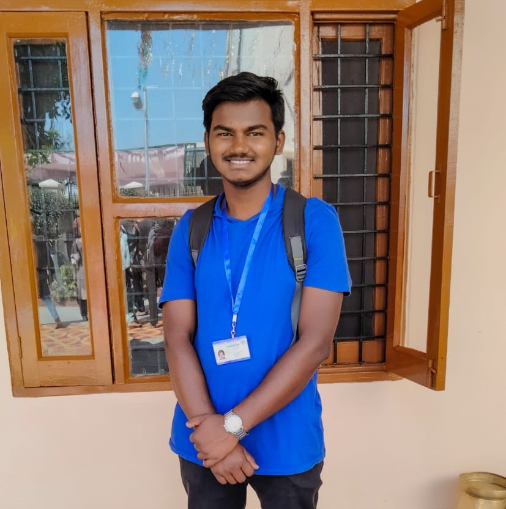

Capstone Project - 1
Hey it's me Subham Kumar Gaurav

Education :
- 10th std with 97.6%
- 12th std with 87.8%
- B.tech in Electronics and Communication engineering (pursuing)
Roles and Responsibilities:
- Actor and Writer in club "NAVARASA"
- Member of Decoration team in "NAVARASA"
- Photographer in the events conducted by "NSS"
- Content writer in Social media handling team of "NSS"
- Assistant Project Leader of the project "Literacy Mission" under "NSS"
- Member of Sports and Adventure team of "NSS"
- Member of Health and Fitness club of "NSS"
Skills :
Technical skills :
- MS Office
- Canva
- Premiere pro
- Languages : C , C++
- HTML 5
-
Soft skills :
- Good Communication
- Trustfulness
- Crowd Handling
- Problem Solving
- Emotional Intelligence
- Teamwork
- Adaptibility to all kinds of environment
- Decision Making
- Active Listening
- Patience
Achievements :
-
Class 10
- Received Mudhalvan Viruthu from the hands of Periyayya Sir (West zone IG of Tamilnadu Police) for being a school topper (97.6%)
-
Class 11
- Received Rs.7000 cash prize in Essay writing competition (Tamil) in the hands of Erode District Collector
- Stood 3rd in Erode district in GK competition conducted by JCI
- Won Gold Medal in 4*100m relay in annual sports meet
-
Class 12
- 2nd Place in Chess in Annual sports meet
- Gold Medal in 4*100m relay in annual sports meet
- Captain of the team Inventors which was runner up in overall games during annual sports meet
- Stood 4th in Erode district and 6th in Tamilnadu state in English proficiency test conducted by Bharat Institute of English
- 2nd prize in Erode 200 Quiz competition conducted by Vikatan Media
- Stood 3rd in Erode district in GK competition conducted by JCI
College
- Won Rs.2500 cash prize by securing first position in quiz competition (two days workshop)
- Secured 6th position (out of 75) in Chess competition in TechFest'23
- Best participation award in National Youth Parliament'23 conducted by NSS
Hobbies
Contact